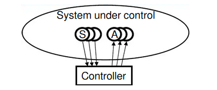
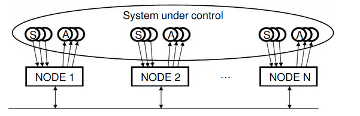

Based on how the embedded system is implemented there are two types
1.Centralised Embedded systems
In this format the controller(computer or plc) reads some input and sends Outputs to some actuators.
The system under control requires a specific response: the controller has to be real time.
The architecture of this system must be centralized i.e. all sensors and actuators must be connected through dedicated links.
2.Distributed embedded Systems
In some applications, cabling started to be a problem: too costly(buildings) and too heavy(cars) For such cases the concept of a decentralized solutions were proposed
In this kind of system, cabling is cheaper and musch simpler and moreover the additon of new sensors and actuators is easier. But simply adding them is also not possible so it was necessary to provide some extra hardware and several controllers, each one performing part of the controlling tasks
The result is the Distributed control system.
They are widespread in nummerous applications:factories, buildings, vehicles, etc.